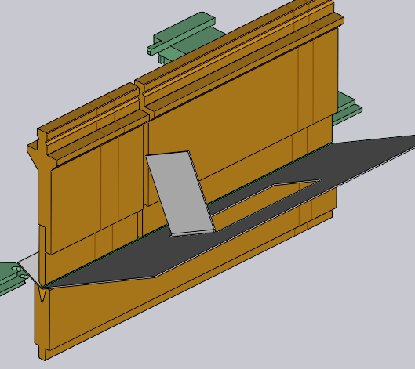

툴 마운트 편집
툴 마운트를 클릭하면 Bend Mount 패널이 표시되며, 이 패널은 벤딩 마운트의 다양한 설정을 편집하고 여러 작업을 수행하는 데 사용됩니다.
Bend 마운트 패널

Bend Mount 패널은 옆에 있는 이미지처럼 보입니다. 정확한 설정 및 사용 가능한 작업은 펀치, 다이 또는 어댑터 마운트 중 어느 것을 클릭하는지에 따라 다릅니다. 또한 일부 설정은 기계 성능에 따라 사용할 수 있거나 사용할 수 없을 수도 있습니다.
-
Change Tool 버튼을 클릭하면 선택한 마운트에 사용된 툴이 다른 툴로 교체됩니다. (교체 툴을 선택하는 데 사용되는 _툴 선택기_에 대한 자세한 내용은 아래 섹션 참조).
-
Length 입력은 스테이션의 길이를 조절하는 데 사용됩니다. 여기에 새 값을 입력하면, TecZone Bend는 요청된 길이에 최대한 가깝게 맞추기 위해 적절한 세그먼트 세트를 사용하여 스테이션을 다시 구성합니다. 벤딩 마운트에 표시된 세그먼트 경계선을 살펴보면 사용 중인 세그먼트를 육안점검할 수 있습니다.
-
Position 입력은 기계의 테이블이나 빔을 따라 마운트의 왼쪽 가장자리 위치를 설정하는 데 사용됩니다. 이 위치도 마운트를 왼쪽 오른쪽으로 _드래그_하면서 조정할 수 있습니다. (마운트 드래그에 대한 아래 섹션 참조).
-
Ear 선택기(펀치 마운트에만 표시됨)를 사용하면 TecZone Bend가 구성에서 왼쪽 및/또는 오른쪽 ear[1] 피스를 사용하도록 강제할 수 있습니다).
-
Flip Tool는 툴을 뒤집는 데 사용됩니다(앞에서 뒤로). 비대칭 툴(예: 스프링 바이트)을 사용하는 마운트를 편집할 때 표시됩니다. 뒤집기 작업은 일관성을 유지하기 위해 추가 홀더와 툴을 뒤집어야 하는지 알아낼 만큼 지능적입니다.예를 들어, 아래 이미지에서 OW_Z4 펀치를 뒤집으면(Z 벤딩부에 사용됨), 다이, 홀더 및 심지어 파트까지 뒤집혀 가공의 일관성이 유지됩니다:

-
Add Adapter는 펀치나 다이의 높이를 높이기 위해 _익스텐더_를 추가하는데 사용됩니다. 어댑터를 추가하면 어댑터가 선택되고 어댑터 패널이 표시됩니다(이를 통해 실제로 사용되는 어댑터를 변경하거나 제거할 수 있습니다).

-
Add Gap는 플랜지가 충돌 없이 통과할 수 있도록 툴 마운트에 틈새를 추가하는 데 사용됩니다(이에 대한 자세한 내용은 아래 틈새 추가 섹션 참조).
-
Taller tool은 선택한 툴을 동일한 계열의 다른 더 높은 툴로 교체하는데 사용됩니다.
-
툴 마운트를 제거하려면 Remove를 클릭합니다. 이 스테이션을 사용하는 벤딩부의 경우 벤딩 네비게이터에 펀치 누락 또는 다이 누락 오류가 표시되며, 왼쪽 명령 표시줄에서 추가를 사용하여 새로운 마운트를 추가하면 이 문제를 해결할 수 있습니다.
-
ACB Sensor 선택기는 이 파트에 사용할 수 있는 다른 각도 측정시스템 ACB 디스크 쌍을 차례대로 수행하는 데 사용됩니다. 선택은 시트 두께 및 사용되고 있는 펀치에 따라 다릅니다.
-
Inventory check 체크박스를 선택하면, 사용된 세그먼트는 사용 가능한 피스 _재고_와 비교하여 점검됩니다(Inventor 링크를 클릭하여 편집 가능). 재고에 없는 세그먼트가 사용되는 경우, 아래 펀치 중앙 근처의 40mm와 45mm 피스에 대해 아래 이미지에서 볼 수 있듯이 특별한 삼엽형 기호가 그려져 있습니다:

이 설정과 작업을 사용하여 툴 마운트를 편집할 때, TecZone Bend는 모든 벤딩 과정의 상태를 즉시 검증하여 충돌, 툴 유용성 등 다양한 점검을 수행합니다. 벤딩 네비게이터 상태는 즉시 실시간으로 업데이트되므로, 다양한 설정을 실험하고 즉각적이고 정확한 피드백을 받는 것이 매우 쉽습니다.
교체 툴 창
Change Tool 버튼을 클릭하면 교체 툴 창이 표시됩니다:

이 창에는 가능한 모든 교체 툴이 표시됩니다.
-
왼쪽의 계층 구조를 사용하여 선택 범위를 좁힙니다. 예를 들어 ,스프링 바이트만 표시하여 선택을 더 쉽게 할 수 있습니다.
-
상단의 정렬 선택기를 사용하여 툴의 이름, 높이, 반경 또는 다른 정렬 기준으로 정렬합니다(정확한 정렬 기준은 펀치, 다이 또는 어댑터 중 무엇을 교체하는지에 따라 달라집니다).
-
검색 상자에 툴 이름 (또는 짧은 이름)을 입력하면 목록을 빠르게 좁힐 수 있습니다. 툴 이름을 일부만 입력해도 됩니다. OW200을 입력하면, 예를 들어 OW200, OW200/S 및 OW200/K 툴 모두 검색됩니다.
-
스케일링 슬라이더를 사용하여 툴 이미지의 크기를 조절합니다. 현재 사용되는 툴은 파란색 채움과 두꺼운 윤곽선을 가지고 있습니다. 하늘색 크로스 해치는 이 파트에서 사용되는 _다른 툴_을 나타냅니다.
-
다른 툴을 제한 없이 보려면 필터 체크박스를 끕니다(적합 여부에 관계없이). 이 보기에서 적합하지 않은 툴은 회색으로 표시되고 이 툴 중 하나 위로 마우스를 이동하면 선택할 수 없는_이유_가 나타납니다:

마우스를 툴 이미지 위로 이동하면, TecZone Bend는 새로 선택한 툴을 사용하여 선택한 툴 마운트를 즉시 재계산하고, 고려 중인 툴이 충돌 문제를 일으킬지 여부를 실시간으로 볼 수 있습니다(벤딩 내비게이터에서 해당 벤딩부들은 충돌이 있는 경우, 즉시 빨간색으로 켜집니다). 이 실시간 미리보기를 통해 다양한 툴을 실험해 보고 작업에 맞는 툴을 쉽게 찾을 수 있습니다.
툴 중 하나를 클릭하면, 선택이 이루어지고 새로운 툴이 해당 파트에 적용됩니다. 대신 Esc 키를 누르면, 선택한 미리 보기가 원래 상태로 돌아가고 원래 툴은 변경되지 않습니다.
네비게이션 및 선택
벤딩 마운트 패널은 네비게이션 및 선택 하위 패널에 다양한 버튼을 표시합니다.
-
Setup 네비게이션 버튼을 사용하여 전체 벤딩 셋업을 편집으로 이동할 수 있습니다. 이에 대한 자세한 내용은 셋업 편집기 참조.
-
Prev 및 Next 버튼을 사용하여 이 셋업에서 다양한 툴 마운트 편집을 차례로 수행합니다.
-
Segments 네비게이션 버튼을 사용하여 한 레벨 아래로 이동하여 이 마운트를 구성하는 _개별 세그먼트_를 편집합니다. 툴 마운트 세그먼트 편집에 관한 아래 섹션은 이에 대한 자세한 정보를 제공합니다.
-
Tool Station 선택기를 사용하여 이 _스테이션을 _ 구성하는 모든 툴 마운트를 선택합니다. 이를 통해 선택한 마운트와 정렬되는 모든 펀치, 다이 및 홀더를 선택하여 함께 편집하거나 함께 이동할 수 있습니다.
-
Same Tool 선택기를 사용하여 동일한 툴을 사용하는 다른 툴 마운트를 선택합니다. 이는 툴 변경 작업을 사용하기 전에 유용합니다. 지정된 툴을 사용하는 모든 스테이션을 선택하면 툴 변경의 선택 범위가 넓어집니다.[2]
여러 마운트 편집하기

Shift+Click을 사용하여 여러 개의 마운트를 선택하면, 모두 함께 편집할 수 있습니다. 모든 마운트에 공통된 설정 및 작업만 편집할 수 있습니다.
Length 또는 Position 같은 필드는 모든 마운트에 대해 동일한 경우에만 편집을 위해 표시됩니다.
여러 스테이션이 있는 경우 툴 변경 작업을 수행하기 전에 모든 펀치나 다이를 선택하는 것이 도움이 됩니다. 이 경우, 사용 가능한 교체 툴이 더 광범위합니다(높이가 다른 펀치와 다이로 인해 충돌이 발생할 위험이 없기 때문입니다).
벤딩 툴 마운트 드래그하기

Position 입력은 마운트의 정확한 위치를 설정하는 데 사용할 수 있습니다.때로는 벤딩 마운트를 새로운 위치로 드래그하는 것이 더 쉽습니다. 이를 수행하려면:
-
벤딩 마운트를 클릭하여 이를 선택합니다(Shift+ Click을 사용하여 여러 마운트 선택)
-
클릭하고 왼쪽/오른쪽으로 드래그하여 선택한 마운트를 이동합니다.
위 이미지에서 볼 수 있듯이, 선택한 마운트 위로 마우스를 이동하면, 화살표 머리가 표시되어 선택한 마운트를 드래그할 수 있음을 나타냅니다. 마운트를 드래그할 때 스냅 표시기를 사용하면 마운트를 다른 기존 마운트에 쉽게 정렬할 수 있습니다.
왼쪽 가장자리 근처에서 마운트를 집어 올리면, 모든 마운트의 왼쪽 가장자리가 스냅에 사용됩니다. 중앙에서 마운트를 집어 올리면, 중심선은 스냅에 사용되고, 이런 식으로 계속됩니다.
고급 작업 과정
다음은 벤딩 마운트 편집기 패널을 사용한 몇 가지 고급 작업입니다.
툴 마운트 세그먼트 편집하기
벤딩 툴 마운트를 편집할 때 세그먼트 네비게이션 버튼을 클릭하면 옆에 있는 이미지처럼 보이는 툴 세그먼트 패널이 열립니다.

-
Segment 선택기는 선택한 툴 세그먼트를 더 길거나 짧은 피스 또는 다른 타입의 피스로 교체하는 데 사용됩니다.
-
< Shift 및 Shift > 버튼은 구성에서 선택한 세그먼트를 왼쪽 또는 오른쪽으로 이동하는 데 사용됩니다. 이는 구성의 전체 길이를 변경하지 않지만, 예를 들어 홀을 피하기 위해 게이지 센서 피스를 왼쪽 또는 오른쪽으로 이동하는 것이 좋습니다.
-
Add 및 Remove 버튼은 구성에 새 세그먼트를 추가하거나 선택한 세그먼트를 제거하는 데 사용됩니다.
-
Prev 및 Next 네비게이션 버튼은 벤딩 마운트에서 다른 세그먼트 편집을 차례대로 수행하는 데 사용됩니다. 위의 이미지에서 볼 수 있듯이 편집 중인 툴 세그먼트가 파란색으로 강조 표시됩니다.
-
Mount 네비게이션 버튼을 사용하여 한 레벨 위로 이동하여 개별 세그먼트가 아닌 전체 벤딩 마운트를 편집합니다.
마운트에 틈새 추가하기
일반적으로 플랜지가 충돌 없이 통과할 수 있도록 하기 위해, 툴 마운트에 좁은 _틈새_를 추가하는 것이 좋습니다. 이를 수행하려면, Add Gap 버튼을 클릭합니다(툴 마운트가 충분히 긴 경우 나타남). 패널에 작은 섹션이 열리고 왼쪽 여백, 오른쪽 여백 및 실제 간격을 설정하기 위한 일련의 상호 연결된 입력이 있습니다. 이 세 가지의 합계가 툴 마운트 길이에 해당하므로, 두 번째 것을 편집하면 세 번째 것이 자동으로 설정됩니다.
아래 이미지는 진행 중인 이 작업을 보여줍니다. 펀치와 충돌하는 플랜지가 있고, 제안된 틈새는, 플랜지가 펀치와 교차하는 위치에 정렬될 때까지, 왼쪽/오른쪽 가장자리 영역을 조정합니다(제안된 틈새가 벤딩 마운트에 추적된 두 개의 주황색 선으로 표시되는 것을 볼 수 있습니다).

하위 패널에서 Ok 버튼을 클릭하면 틈새가 생기고 이제 충돌 오류가 해결된 것을 볼 수 있습니다:

| 펀치 홀더를 사용하는 스테이션을 편집할 때 TecZone Bend는 펀치에만 또는 펀치와 홀더 모두에 틈새를 도입해야 하는지 묻습니다. |